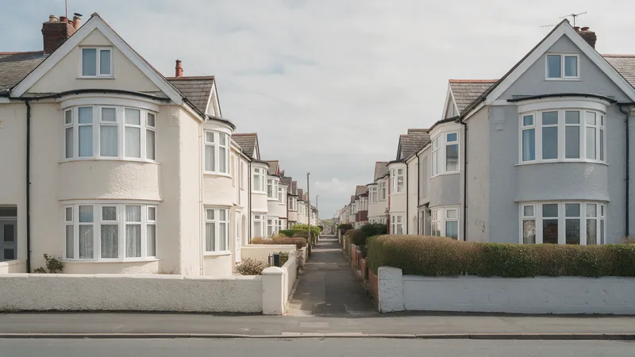

The wall decides, not the calendar
Most exterior paints want three things: a surface that is genuinely dry, a temperature that is not heading for freezing overnight, and no rain due for a few hours after it goes on. Get those and the month matters much less than people think. Miss them and a warm bright day in October can still be the wrong day, because the wall was damp at eight in the morning and will be wet again by five.
That is dew, and it is the thing that catches people out at both ends of the year. It is why we work shorter days as the autumn comes in, and why we will move a job a week rather than push on and have you ring us in two years.
Masonry, render and pebbledash
Old masonry paint goes chalky. Rub a hand down a south or west facing wall and if it comes away white, that powder has to come off or be sealed before anything goes on top, or the new coat is stuck to loose dust rather than to the wall. A wash down, a good scrape of anything flaking, then a stabilising primer where the surface needs one.
Cracks get raked out and filled with something flexible rather than hard filler, because a wall outside moves with the weather and a hard fill cracks straight back through. Pebbledash drinks far more paint than a smooth render does and wants working into the stone rather than skimmed across the top, which is why it takes longer than the square metres suggest.
Timber, and the bit everybody leaves too long
Window frames, doors, fascias, soffits and bargeboards are where the weather actually gets in. Bare patches, flaking paint and a soft spot at the bottom corner of a frame are the warning. Paint goes on sound timber: anything soft gets cut out and made good first, and if it is gone past that then it is a joiner before it is a decorator.
Knots get treated or they bleed through, bare wood gets a primer, and the putty line and the joints get the attention because that is where water sits. A frame caught in time is a day's work. The same frame left two more winters is a new frame.
 Generated photo
Generated photoGenerated for this demo. Not a photograph of a real job.

Generated photoPainted render and pebbledash fronts, a mile or two off the water. Half the exterior work round here is on walls like these.
On the job
How this one usually goes.
- Look at it dry and look at it wetA wall gets judged on a dry day and after rain. Where it stays dark afterwards is where water is getting in, and that gets sorted before paint rather than painted over.
- Wash down and scrape backDirt, green growth and chalky old paint off, anything flaking scraped back to a sound edge, gutters and overhangs checked for the drip that caused the stain.
- Make good and treatCracks raked and filled with something that can move, bare timber primed, knots treated, soft timber cut out and made good. Nothing gets painted to hide it.
- Mask and protectWindows, glass, paths and planting covered. Masking tape off the same day rather than left to bake on, because tape that stays on in the sun takes the new paint with it.
- Two coats, with the weather watchedTwo coats on the masonry and on the timber, stopping early enough in the day that it is properly off before the dew comes down.
A sample running order for this demo. Yours depends on the property and what the surfaces turn out to be doing.
Questions
Asked about this job.
Which months are no good?
Deep winter, realistically. Cold slows everything down, short days mean the dew is on the wall before the paint has gone off, and most products stop behaving as they should once it is heading for freezing overnight.
Late spring to early autumn is the window. Within that, the weather for the three days around the job matters more than the date.
Does the wall need washing first?
Yes, every time. Coastal walls get salt and green growth, and all walls get a layer of dust and chalky old paint. New paint sticks to whatever it lands on, so if it lands on loose dust it is stuck to loose dust.
How long should an exterior last?
It depends far too much on the wall, the aspect and the weather for anybody to give you a number on a web page, and anybody who does is guessing. A sheltered north wall and a sea facing west wall will not behave the same way.
What we will tell you at the quote is which walls on your house are the hard ones, and what you should be looking at in a couple of years.
Can you paint uPVC windows and doors?
Yes, with the right preparation. A thorough clean to get the surface properly grease free, a key, and a primer made for plastic. Done that way it holds well. Done without the primer it peels, which is where uPVC painting got its reputation.
Do you need scaffolding?
For an ordinary two storey house, usually not: ladders, a tower or a hop up cover most of it safely. Anything high, anything over a conservatory or a flat roof, or a gable with no safe ground to stand on is different, and we would say so rather than improvise.
General trade knowledge written for this demo, not advice on your property.
Our work
Sample jobs like this.
Generated photoThe front, back in colourThornton-Cleveleys · Sample Generated photoFrames cut inLytham St Annes · Sample
Generated photoFrames cut inLytham St Annes · SampleMade up samples with generated pictures. Tap one for the detail.
Also
The other things we do.
Interior painting
Walls, ceilings and the bits either side of them. Filled, caulked, sanded and dusted off before a drop of paint goes on, then laid off properly.
More →Wallpaper hanging
One feature wall or a whole room. Lining where the wall needs it, plumbed off a line rather than off the corner, and patterns matched at every seam.
More →Woodwork and doors
Skirtings, architraves, window boards, spindles and doors. Sanded flat, knotted and primed where it is bare, then brushed so you cannot find the laps.
More →Kitchen cabinet painting
Doors off, degreased, keyed, primed for the surface they actually are, then two thin coats. A new looking kitchen without a new kitchen.
More →Commercial and rental refreshes
Empty flats, offices, salons and holiday lets. Worked round the keys and the cleaners rather than round us, and left ready to photograph.
More →Shall somebody come and look at it?
Tell us which rooms and your postcode. Twenty minutes with a light held along the wall tells us more than any photograph.